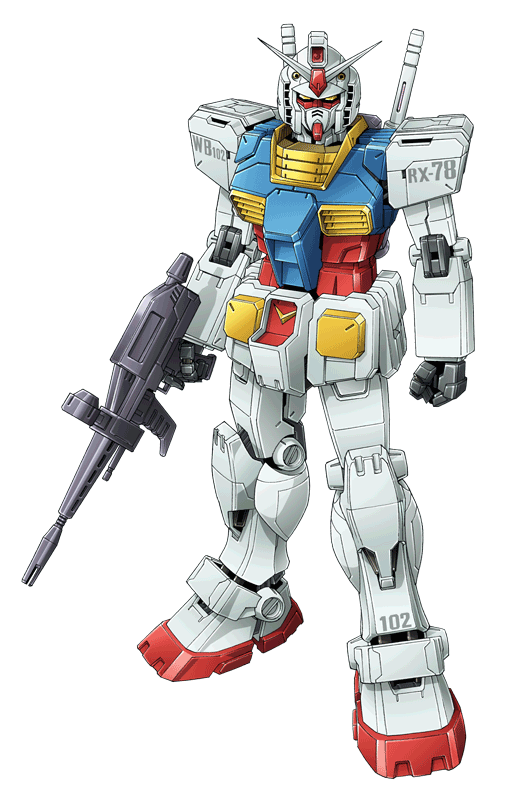

RX-78-2 Gundam
El RX-78-2 fue el segundo de los tres mobile suits prototipos Gundam construidos en Side 7 en el año U.C. 0079, como parte del Proyecto V de la Federación Terrestre. Construido para complementar a la unidad de largo alcance Guntank y la unidad de apoyo de alcance medio Guncannon, el Gundam fue diseñado para ser una maquina de corto alcance, altamente movil con avanzado armamento mas alla de los usados por las máquinas Zeon. Una incursión por fuerzas Zeon hacia Side 7 en Septiembre de U.C. 0079 resultó en un fuerte daño a la otras dos unidades RX-78 construidas en la colonia. Sin embargo, gracias a la inesperada interferencia del hijo del director del Proyecto V Tem Ray, Amuro Ray, dentro del RX-78-2, los intrusos Zeon fueron repelidos. A pesar de que ellos han causado daños significativos a la colonia, el Gundam y sus unidades hermanas salieron intactas. Las tres maquinas actuaron como fuerza de defensa para el Carguero de Mobile Suits clase Pegasus SCV-70 White Base y protegieron la nave en su camino a la Tierra y viajaron por Norte América y Asia. El RX-78-2 se pudo ver en la defensa de los cuarteles de la Federación en Jaburo y en las incursiones clave en las bases asteroides de Zeon, Solomon y A Baoa Qu. En la batalla final de la Guerra de Un Año, el Gundam enfrentó a un prototipo Zeon sin terminar, el MSN-02 Zeong (piloteado por Char Aznable), en batalla. Ambas maquinas sufrieron fuertes golpes una de la otra, con el Gundam perdiendo su cabeza y brazo izquierdo.
Los dos mobile suits finalmente se destruyeron el uno al otro dentro de los corredores de la fortaleza de Zeon cuando sus pilotos pudieron disparar un último tiro al mismo tiempo con el piloto automático encendido. Amuro después regresó a los restos del Gundam y usó el aun intacto Core Fighter para escapar de la fortaleza. A pesar de que el Gundam de Amuro fuese destruido, la serie misma disfrutó una larga vida de servicio en la Federación, siendo hecha con muchas variantes antes de ser reemplazado en U.C. 0087 por el Gundam Mk.II, el Zeta Gundam y el ZZ Gundam
| Informacion | |
|---|---|
| Nombre Oficial: Gundam | |
| Número de Modelo: RX-78-2 | |
| Clasificación: Mobile Suit Prototipo de Combate Cercano | |
| Manufacturero: Federación Terrestre Proyecto V | |
| Operador: Federación Terrestre | |
| Altura total: 18.5 metros | |
| Peso estandar: 43.4 t | |
| Peso máximo: 60.0 t | Armadura: Aleación Luna Titanium |
| Velocidad máxima: 165 km/h0.93 G | Cabina: Un piloto solamente cabina en eltorso con Sistema Core Block del FF-X7 Core Fighter |
| Potencia de salida: 1380 kW | Fuente de energía: Reactor de Fusión Minovsky Ultracompacto |
| Rango sensor: 5700 metros | Rocket Thrusters: 2 x 24000 kg4 x 1870 kg |
RX-93 ν Gundam
Siguiendo la falla de Amuro por detener a Char del intento de arrojar la Quinta Luna, Amuro decidió diseñar un mobile suit que con el que pudiera combatir contra el MSN-04 Sazabi de Char. Esta máquina, el RX-93 v Gundam, fue diseñado no sólo para ser el verdadero sucesor del RX-78-2 Gundam, sino para ser también el Gundam supremo. Aunque fue desconocido para Amuro, Char supo que este podría ser el caso y permitió a Anaheim Electronics pasar la tecnología de psycoframe para el uso del nuevo Gundam. Sin embargo, la prueba de esta maquina fue interrumpida cuando la pelea entre las fuerzas de Londo Bell y Neo Zeon forzó a Amuro y a su novia Chan Agi a tomar el v Gundam con ellos para salvar a todos. Tristemente, la falta de prueba pudo ser fácilmente demostrada cuando, durante una escaramuza, el pánico de Amuro causó que sus Fin Funnels reaccionaran, forzando a Gyunei Guss a matar a su prisionera, Kayra Su.
Como las fuerzas de Londo Bell fueron a detener a Char quien buscaba arrojar Axis a la Tierra. Amuro y Char se enfrentaron cabeza a cabeza, batallando uno contra el otro y practicamente destrozando sus MS. Al final, otra flaqueza fue revelada por sí mismo - el psycoframe resonó con las fuertes emociones y fuerza de voluntad, empujando los ya asombrosos poderes Newtype de Amuro a nuevas alturas, y logrando empujar a Axis lejos de la Tierra. La resonancia creó una luz que pudo ser vista fácilmente desde la Tierra.

| Informacion | |
|---|---|
| Nombre Oficial: Gundam | |
| Número de Modelo: RX-93 | |
| Clasificación: Mobile Suit Prototipo de Propósito General de uso Newtypeo | |
| Manufacturero:Anaheim Electronics | |
| Operador: Federación Terrestre Londo Bell | |
| Altura total: 23.0 metros | |
| Peso estandar: 27.9 t | |
| Armadura:Aleación de Gundarium | Peso máximo: 63.0 t |
| Cabina:Un piloto solamente (cabina eyectable con monitor panorámico/asiento lineal en el torso) | Velocidad máxima: 165 km/h0.93 G |
| Fuente de energía: Reactor de Fusión Minovsky Ultracompacto | Potencia de salida: 2980 kW |
| Rocket Thrusters: 4 x 18300 kg2 x 12300kg | Rango sensor: 21300 metros |